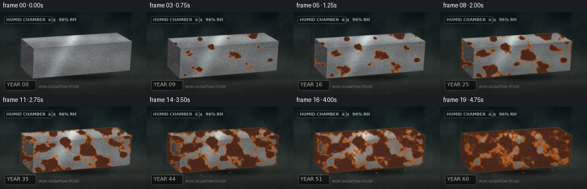
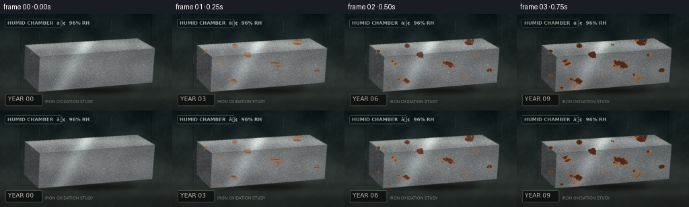

CODING AGENTS AS PIXEL WORLD MODELS
traex/GPT-5.6-Sol · phygen_156
点击播放 · 原生 RGB 像素
逐轮保存的候选
回放视频、检查图与代码变化。
每份候选均可单独播放。实际图片检查记录在下方工具轨迹中。
候选 01播放与检查图
点击播放 · 原生 RGB 像素

展开代码变化
--- 上一保存版本
+++ 本次保存版本
@@ -0,0 +1,249 @@
+from pathlib import Path
+import json
+import math
+import numpy as np
+import cv2
+from PIL import Image, ImageDraw, ImageFont, ImageFilter
+import artifact_io
+
+CASE_DIR = Path(__file__).resolve().parent
+SPEC = json.loads((CASE_DIR / 'task_spec.json').read_text())
+W, H, N = SPEC['width'], SPEC['height'], SPEC['frames']
+S = 3
+w, h = W*S, H*S
+rng = np.random.default_rng(1562026)
+
+
+def smooth_noise(shape, scale, seed):
+ rr = np.random.default_rng(seed)
+ gh = max(2, int(math.ceil(shape[0] / scale)) + 2)
+ gw = max(2, int(math.ceil(shape[1] / scale)) + 2)
+ grid = rr.normal(0, 1, (gh, gw)).astype(np.float32)
+ out = cv2.resize(grid, (shape[1], shape[0]), interpolation=cv2.INTER_CUBIC)
+ return out
+
+
+def normalize(a):
+ lo, hi = np.percentile(a, [1, 99])
+ return np.clip((a-lo)/(hi-lo+1e-6), 0, 1)
+
+
+def poly_mask(points, blur=0):
+ im = Image.new('L', (w, h), 0)
+ ImageDraw.Draw(im).polygon([(int(x*S), int(y*S)) for x,y in points], fill=255)
+ if blur:
+ im = im.filter(ImageFilter.GaussianBlur(blur*S))
+ return np.asarray(im, dtype=np.float32)/255.0
+
+
+def blend(base, layer, alpha):
+ if alpha.ndim == 2:
+ alpha = alpha[...,None]
+ return base*(1-alpha) + layer*alpha
+
+# Scene coordinate grids.
+yy, xx = np.mgrid[0:h, 0:w].astype(np.float32)
+X, Y = xx/S, yy/S
+
+# Stable atmospheric and material fields.
+wall_n = (0.55*smooth_noise((h,w), 18*S, 20) +
+ 0.30*smooth_noise((h,w), 5*S, 21) +
+ 0.15*smooth_noise((h,w), 1.2*S, 22))
+wall_n = normalize(wall_n)-0.5
+mist_n = normalize(smooth_noise((h,w), 37*S, 25))
+metal_fine = smooth_noise((h,w), 0.75*S, 30)
+metal_long = cv2.GaussianBlur(smooth_noise((h,w), 2*S, 31), (0,0), 6*S)
+metal_long = normalize(metal_long)-0.5
+rust_coarse = 0.58*normalize(smooth_noise((h,w), 11*S, 40)) + 0.28*normalize(smooth_noise((h,w), 4*S, 41)) + 0.14*normalize(smooth_noise((h,w), 1.3*S, 42))
+rust_grain = normalize(smooth_noise((h,w), 1.0*S, 43))
+pit_noise = normalize(smooth_noise((h,w), 0.65*S, 44))
+
+# Iron slab geometry: top, broad front, and shadowed end.
+top_pts = [(37,46),(204,36),(230,51),(59,64)]
+front_pts = [(59,64),(230,51),(226,102),(57,116)]
+side_pts = [(37,46),(59,64),(57,116),(36,95)]
+top_m = poly_mask(top_pts, .35)
+front_m = poly_mask(front_pts, .35)
+side_m = poly_mask(side_pts, .35)
+obj_m = np.clip(top_m+front_m+side_m,0,1)
+# Hard interior mask for distance-to-edge susceptibility.
+hard_obj = (obj_m > .65).astype(np.uint8)
+dist = cv2.distanceTransform(hard_obj, cv2.DIST_L2, 5) / S
+edge = np.exp(-dist/4.0) * hard_obj
+
+# Localized nucleation centers make recognizable expanding rust blooms.
+spots = np.zeros((h,w), np.float32)
+spot_specs = [
+ (72,72,11,1.0),(112,61,8,.90),(151,76,14,.98),(198,62,9,.94),
+ (53,91,7,.88),(89,102,13,.96),(132,91,8,.83),(179,94,12,.91),
+ (215,84,7,.90),(49,55,5,.82),(92,48,7,.78),(142,45,6,.84),
+ (186,43,8,.88),(221,54,5,.82),(67,110,5,.84)
+]
+for cx,cy,rad,amp in spot_specs:
+ d2=((X-cx)/(rad*1.35))**2+((Y-cy)/rad)**2
+ spots += amp*np.exp(-d2*2.0)
+spots = normalize(spots)
+# Corrosion propensity remains fixed, so growth is temporally coherent.
+score = normalize(.50*rust_coarse + .34*spots + .16*edge)
+score_vals = score[hard_obj.astype(bool)]
+rank = np.zeros_like(score)
+# Percentile rank for rust age and progressive coverage.
+order = np.argsort(score_vals)
+rvals = np.empty_like(score_vals)
+rvals[order] = np.linspace(0,1,len(order),dtype=np.float32)
+rank[hard_obj.astype(bool)] = rvals
+
+# Preselected wall condensation and object droplets.
+wall_drops = []
+for _ in range(38):
+ dx = rng.uniform(7,249); dy = rng.uniform(8,107)
+ length = rng.uniform(3,18); width = rng.uniform(.25,.7)
+ wall_drops.append((dx,dy,length,width,rng.uniform(.3,1)))
+obj_drops = [(48,58,2.0),(76,56,1.6),(103,51,1.8),(128,50,1.3),(158,45,1.7),(190,43,1.4),
+ (73,78,2.1),(102,71,1.3),(135,70,1.6),(167,64,1.4),(199,60,1.8),(83,98,1.2),
+ (122,91,1.7),(155,87,1.1),(189,82,1.6),(213,76,1.2)]
+flake_specs = [(47,119,2.4),(70,123,1.7),(95,119,2.0),(121,125,1.3),(145,116,2.1),(171,119,1.5),
+ (195,111,2.2),(218,108,1.4),(58,128,1.0),(182,126,1.1),(106,132,.9)]
+
+try:
+ font_small = ImageFont.truetype('/usr/share/fonts/truetype/dejavu/DejaVuSans.ttf', 6*S)
+ font_year = ImageFont.truetype('/usr/share/fonts/truetype/dejavu/DejaVuSans.ttf', 9*S)
+ font_bold = ImageFont.truetype('/usr/share/fonts/truetype/dejavu/DejaVuSans-Bold.ttf', 7*S)
+except OSError:
+ font_small = font_year = font_bold = ImageFont.load_default()
+
+frames=[]
+for fi in range(N):
+ p = fi/(N-1)
+ # Very restrained long-term ambient variation; geometry/camera stay locked.
+ ambient = 0.97 + 0.035*math.sin(fi*1.31) + .02*p
+ # Damp slate wall and wet bench.
+ t = np.clip(Y/116,0,1)[...,None]
+ wall_top = np.array([13,25,28],np.float32)
+ wall_bottom = np.array([53,59,55],np.float32)
+ arr = wall_top*(1-t)+wall_bottom*t
+ arr += wall_n[...,None]*np.array([11,12,10])
+ # Broad milky humidity veils.
+ veil = np.clip((mist_n-.48)*.28,0,.11)[...,None]
+ arr = arr*(1-veil)+np.array([113,130,125])*veil
+ # Subtle vertical wall seams.
+ for sx in [31,225]:
+ line = np.exp(-((X-sx)/.75)**2)[...,None]
+ arr -= line*np.array([9,8,6])
+ # Wet horizontal surface beneath slab.
+ floor_mask = np.clip((Y-105)/12,0,1)[...,None]
+ floor = np.zeros_like(arr)
+ floor_base = np.array([34,39,37],np.float32)
+ floor[:] = floor_base
+ floor += wall_n[...,None]*np.array([7,7,6])
+ # Puddle reflection / sheen.
+ sheen = np.exp(-((Y-119)/10)**2) * (0.45+0.55*normalize(smooth_noise((h,w),22*S,71)))
+ floor += sheen[...,None]*np.array([18,21,18])
+ arr = arr*(1-floor_mask)+floor*floor_mask
+ # Soft cast shadow anchors the heavy slab.
+ shadow = np.exp(-(((X-139)/92)**2 + ((Y-114)/9.5)**2)*2.1)[...,None]
+ arr *= (1-0.55*shadow)
+
+ # Background condensation streaks are behind the specimen.
+ pil = Image.fromarray(np.uint8(np.clip(arr,0,255)), 'RGB')
+ ov = Image.new('RGBA',(w,h),(0,0,0,0)); d=ImageDraw.Draw(ov,'RGBA')
+ for j,(dx,dy,ll,ww,phase) in enumerate(wall_drops):
+ slide=(fi*phase*.43)%4.5
+ x0=int(dx*S); y0=int((dy+slide)*S); y1=int(min(108,dy+slide+ll)*S)
+ d.line((x0,y0,x0-int(.35*S),y1), fill=(161,184,177,38), width=max(1,int(ww*S)))
+ d.ellipse((x0-int(ww*1.2*S),y1-int(ww*S),x0+int(ww*1.2*S),y1+int(ww*S)), fill=(170,196,188,45))
+ pil=Image.alpha_composite(pil.convert('RGBA'),ov).convert('RGB')
+ arr=np.asarray(pil,dtype=np.float32)
+
+ # Face-specific polished metal shading.
+ brush = np.clip(metal_fine*.8 + metal_long*1.5,-1.6,1.6)
+ top_light = 126 + 29*np.exp(-((Y-46)/7)**2) + 13*brush
+ front_light = 105 + 20*np.exp(-((Y-(72+.07*X))/18)**2) + 11*brush
+ side_light = 72 + 10*brush
+ top_col=np.stack([top_light*1.00,top_light*1.03,top_light*1.03],axis=-1)
+ front_col=np.stack([front_light*.98,front_light*1.01,front_light*1.02],axis=-1)
+ side_col=np.stack([side_light*.95,side_light*.99,side_light],axis=-1)
+ # A long specular sweep makes frame zero unmistakably smooth and metallic.
+ spec = np.exp(-((X + .58*Y - 153)/12)**2)
+ top_col += spec[...,None]*np.array([54,59,58])
+ front_col += spec[...,None]*np.array([32,35,35])
+ arr=blend(arr,side_col,side_m)
+ arr=blend(arr,front_col,front_m)
+ arr=blend(arr,top_col,top_m)
+
+ # Progressive corrosion: starts as isolated blooms and reaches deep, layered rust.
+ coverage = 0.0 if fi==0 else 0.94*(p**1.38)
+ if coverage > 0:
+ threshold=np.quantile(score_vals,1-coverage)
+ rust_alpha=1/(1+np.exp(-(score-threshold)/.025))
+ rust_alpha *= obj_m
+ # Old central oxide is dark; fresh expanding margins stay orange.
+ age=np.clip((rank-(1-coverage))/(max(coverage,1e-4)*.70),0,1)
+ boundary=1-age
+ tex=(rust_grain-.5)
+ fresh=np.stack([199+24*tex,98+20*tex,28+10*tex],axis=-1)
+ mature=np.stack([137+42*tex,61+22*tex,23+12*tex],axis=-1)
+ old=np.stack([77+25*tex,38+15*tex,25+10*tex],axis=-1)
+ stage=np.clip(age*1.6 + p*.24,0,1)
+ rust_col=fresh*(1-stage[...,None])+mature*stage[...,None]
+ deep=np.clip((stage-.62)/.38,0,1)[...,None]
+ rust_col=rust_col*(1-deep)+old*deep
+ # Ochre halo on active corrosion fronts.
+ halo=np.clip(boundary*1.2,0,1)[...,None]
+ rust_col=rust_col*(1-.18*halo)+np.array([216,123,38])*.18*halo
+ arr=blend(arr,rust_col,rust_alpha*.96)
+ # Late pits and black scale, restricted to aged oxide.
+ pit_gate=np.clip((p-.48)/.52,0,1)
+ pits=((pit_noise > (0.91-.08*p)).astype(np.float32) * (age>.38) * obj_m)
+ pits=cv2.GaussianBlur(pits,(0,0),.28*S)
+ pit_col=np.zeros_like(arr)+np.array([42,29,22])
+ arr=blend(arr,pit_col,pits*pit_gate*.78)
+ # Dark undercutting along exposed slab edge in late years.
+ edge_decay=np.clip((p-.55)/.45,0,1)*edge*obj_m
+ arr=blend(arr,np.zeros_like(arr)+np.array([61,35,20]),edge_decay*.34)
+
+ # Object moisture beads and highlights. They remain, but become subdued on rough rust.
+ pil=Image.fromarray(np.uint8(np.clip(arr,0,255)),'RGB').convert('RGBA')
+ drops=Image.new('RGBA',(w,h),(0,0,0,0)); dd=ImageDraw.Draw(drops,'RGBA')
+ for j,(dx,dy,r) in enumerate(obj_drops):
+ # Minute downward creep over the 60-year montage gives subtle timelapse life.
+ dy2=dy + min(2.8,p*(j%3)*.9)
+ rr=r*S; x0=dx*S; y0=dy2*S
+ opacity=int(105-30*p)
+ dd.ellipse((int(x0-rr),int(y0-rr*.62),int(x0+rr),int(y0+rr*.62)), fill=(36,53,51,35), outline=(195,218,212,opacity), width=max(1,S//2))
+ dd.ellipse((int(x0-rr*.45),int(y0-rr*.4),int(x0-rr*.05),int(y0-rr*.05)), fill=(235,245,240,int(opacity*1.25)))
+ # Corrosion flakes collect below the slab late in the timelapse.
+ visible=int(len(flake_specs)*np.clip((p-.48)/.52,0,1)+.001)
+ for k,(fx,fy,sz) in enumerate(flake_specs[:visible]):
+ ang=(k*.79+.3)
+ pts=[]
+ for q in range(5):
+ a=ang+q*2*math.pi/5
+ rad=sz*(.65+((k*17+q*11)%7)/12)
+ pts.append((int((fx+math.cos(a)*rad)*S),int((fy+math.sin(a)*rad*.55)*S)))
+ dd.polygon(pts,fill=(118+8*(k%3),53,22,235),outline=(54,31,20,210))
+ if k%2==0:
+ dd.line((pts[0],pts[2]),fill=(211,104,31,150),width=1*S)
+ pil=Image.alpha_composite(pil,drops)
+
+ # Clean documentary overlay, aiding the requested decades-scale reading.
+ hud=Image.new('RGBA',(w,h),(0,0,0,0)); hd=ImageDraw.Draw(hud,'RGBA')
+ hd.rounded_rectangle((7*S,7*S,92*S,20*S),radius=2*S,fill=(7,15,16,145),outline=(139,166,159,80),width=1*S)
+ hd.text((11*S,9*S),'HUMID CHAMBER ⢠96% RH',font=font_bold,fill=(205,220,215,215))
+ year=round(60*p)
+ # Bottom year caption on a dark glass-like plate.
+ hd.rounded_rectangle((8*S,119*S,63*S,137*S),radius=2*S,fill=(7,12,12,172),outline=(179,193,185,65),width=1*S)
+ hd.text((12*S,121*S),f'YEAR {year:02d}',font=font_year,fill=(232,225,204,238))
+ hd.text((67*S,127*S),'IRON OXIDATION STUDY',font=font_small,fill=(188,196,189,155))
+ pil=Image.alpha_composite(pil,hud).convert('RGB')
+
+ # Cinematic focus, vignette, and antialiasing.
+ arr=np.asarray(pil,dtype=np.float32)*ambient
+ vign=np.clip(1 - .22*(((X-W/2)/(W*.72))**2+((Y-H/2)/(H*.75))**2),.72,1)
+ arr*=vign[...,None]
+ small=cv2.resize(np.uint8(np.clip(arr,0,255)),(W,H),interpolation=cv2.INTER_AREA)
+ frames.append(small)
+
+frames=np.stack(frames).astype(np.uint8)
+artifact_io.save(frames, CASE_DIR)
+print(f'Saved {frames.shape[0]} RGB frames at {frames.shape[2]}x{frames.shape[1]}')
候选 02播放与检查图
点击播放 · 原生 RGB 像素

展开代码变化
--- 上一保存版本
+++ 本次保存版本
@@ -145,7 +145,7 @@
arr *= (1-0.55*shadow)
# Background condensation streaks are behind the specimen.
- pil = Image.fromarray(np.uint8(np.clip(arr,0,255)), 'RGB')
+ pil = Image.fromarray(np.uint8(np.clip(arr,0,255)))
ov = Image.new('RGBA',(w,h),(0,0,0,0)); d=ImageDraw.Draw(ov,'RGBA')
for j,(dx,dy,ll,ww,phase) in enumerate(wall_drops):
slide=(fi*phase*.43)%4.5
@@ -203,7 +203,7 @@
arr=blend(arr,np.zeros_like(arr)+np.array([61,35,20]),edge_decay*.34)
# Object moisture beads and highlights. They remain, but become subdued on rough rust.
- pil=Image.fromarray(np.uint8(np.clip(arr,0,255)),'RGB').convert('RGBA')
+ pil=Image.fromarray(np.uint8(np.clip(arr,0,255))).convert('RGBA')
drops=Image.new('RGBA',(w,h),(0,0,0,0)); dd=ImageDraw.Draw(drops,'RGBA')
for j,(dx,dy,r) in enumerate(obj_drops):
# Minute downward creep over the 60-year montage gives subtle timelapse life.
@@ -229,7 +229,7 @@
# Clean documentary overlay, aiding the requested decades-scale reading.
hud=Image.new('RGBA',(w,h),(0,0,0,0)); hd=ImageDraw.Draw(hud,'RGBA')
hd.rounded_rectangle((7*S,7*S,92*S,20*S),radius=2*S,fill=(7,15,16,145),outline=(139,166,159,80),width=1*S)
- hd.text((11*S,9*S),'HUMID CHAMBER ⢠96% RH',font=font_bold,fill=(205,220,215,215))
+ hd.text((11*S,9*S),'HUMID CHAMBER | 96% RH',font=font_bold,fill=(205,220,215,215))
year=round(60*p)
# Bottom year caption on a dark glass-like plate.
hd.rounded_rectangle((8*S,119*S,63*S,137*S),radius=2*S,fill=(7,12,12,172),outline=(179,193,185,65),width=1*S)
可观测工具轨迹
实际执行的命令与返回图片。
命令 1exit 0
/bin/bash -lc "cat prompt.txt && printf '\\n--- GENERATION_RULES.md ---\\n' && cat GENERATION_RULES.md"
命令 2exit 0
/bin/bash -lc "cat task_spec.json && printf '\\n--- files ---\\n' && find . -maxdepth 2 -type f -printf '%p\\n' | sort"
命令 3exit 0
/bin/bash -lc "which ffmpeg || true; which python3 || true; python3 - <<'PY' mods=['PIL','cv2','numpy','imageio'] for m in mods: try: x=__import__(m); print(m,'OK',getattr(x,'__version__','')) except Exception as e: print(m,'NO',e) PY"
命令 4exit 0
/bin/bash -lc 'cat artifact_io.py'
命令 5exit 0
/bin/bash -lc "cat > generate.py <<'PY'
from pathlib import Path
import json
import math
import numpy as np
import cv2
from PIL import Image, ImageDraw, ImageFont, ImageFilter
import artifact_io
CASE_DIR = Path(__file__).resolve().parent
SPEC = json.loads((CASE_DIR / 'task_spec.json').read_text())
W, H, N = SPEC['width'], SPEC['height'], SPEC['frames']
S = 3
w, h = W*S, H*S
rng = np.random.default_rng(1562026)
def smooth_noise(shape, scale, seed):
rr = np.random.default_rng(seed)
gh = max(2, int(math.ceil(shape[0] / scale)) + 2)
gw = max(2, int(math.ceil(shape[1] / scale)) + 2)
grid = rr.normal(0, 1, (gh, gw)).astype(np.float32)
out = cv2.resize(grid, (shape[1], shape[0]), interpolation=cv2.INTER_CUBIC)
return out
def normalize(a):
lo, hi = np.percentile(a, [1, 99])
return np.clip((a-lo)/(hi-lo+1e-6), 0, 1)
def poly_mask(points, blur=0):
im = Image.new('L', (w, h), 0)
ImageDraw.Draw(im).polygon([(int(x*S), int(y*S)) for x,y in points], fill=255)
if blur:
im = im.filter(ImageFilter.GaussianBlur(blur*S))
return np.asarray(im, dtype=np.float32)/255.0
def blend(base, layer, alpha):
if alpha.ndim == 2:
alpha = alpha[...,None]
return base*(1-alpha) + layer*alpha
# Scene coordinate grids.
yy, xx = np.mgrid[0:h, 0:w].astype(np.float32)
X, Y = xx/S, yy/S
# Stable atmospheric and material fields.
wall_n = (0.55*smooth_noise((h,w), 18*S, 20) +
0.30*smooth_noise((h,w), 5*S, 21) +
0.15*smooth_noise((h,w), 1.2*S, 22))
wall_n = normalize(wall_n)-0.5
mist_n = normalize(smooth_noise((h,w), 37*S, 25))
metal_fine = smooth_noise((h,w), 0.75*S, 30)
metal_long = cv2.GaussianBlur(smooth_noise((h,w), 2*S, 31), (0,0), 6*S)
metal_long = normalize(metal_long)-0.5
rust_coarse = 0.58*normalize(smooth_noise((h,w), 11*S, 40)) + 0.28*normalize(smooth_noise((h,w), 4*S, 41)) + 0.14*normalize(smooth_noise((h,w), 1.3*S, 42))
rust_grain = normalize(smooth_noise((h,w), 1.0*S, 43))
pit_noise = normalize(smooth_noise((h,w), 0.65*S, 44))
# Iron slab geometry: top, broad front, and shadowed end.
top_pts = [(37,46),(204,36),(230,51),(59,64)]
front_pts = [(59,64),(230,51),(226,102),(57,116)]
side_pts = [(37,46),(59,64),(57,116),(36,95)]
top_m = poly_mask(top_pts, .35)
front_m = poly_mask(front_pts, .35)
side_m = poly_mask(side_pts, .35)
obj_m = np.clip(top_m+front_m+side_m,0,1)
# Hard interior mask for distance-to-edge susceptibility.
hard_obj = (obj_m > .65).astype(np.uint8)
dist = cv2.distanceTransform(hard_obj, cv2.DIST_L2, 5) / S
edge = np.exp(-dist/4.0) * hard_obj
# Localized nucleation centers make recognizable expanding rust blooms.
spots = np.zeros((h,w), np.float32)
spot_specs = [
(72,72,11,1.0),(112,61,8,.90),(151,76,14,.98),(198,62,9,.94),
(53,91,7,.88),(89,102,13,.96),(132,91,8,.83),(179,94,12,.91),
(215,84,7,.90),(49,55,5,.82),(92,48,7,.78),(142,45,6,.84),
(186,43,8,.88),(221,54,5,.82),(67,110,5,.84)
]
for cx,cy,rad,amp in spot_specs:
d2=((X-cx)/(rad*1.35))**2+((Y-cy)/rad)**2
spots += amp*np.exp(-d2*2.0)
spots = normalize(spots)
# Corrosion propensity remains fixed, so growth is temporally coherent.
score = normalize(.50*rust_coarse + .34*spots + .16*edge)
score_vals = score[hard_obj.astype(bool)]
rank = np.zeros_like(score)
# Percentile rank for rust age and progressive coverage.
order = np.argsort(score_vals)
rvals = np.empty_like(score_vals)
rvals[order] = np.linspace(0,1,len(order),dtype=np.float32)
rank[hard_obj.astype(bool)] = rvals
# Preselected wall condensation and object droplets.
wall_drops = []
for _ in range(38):
dx = rng.uniform(7,249); dy = rng.uniform(8,107)
length = rng.uniform(3,18); width = rng.uniform(.25,.7)
wall_drops.append((dx,dy,length,width,rng.uniform(.3,1)))
obj_drops = [(48,58,2.0),(76,56,1.6),(103,51,1.8),(128,50,1.3),(158,45,1.7),(190,43,1.4),
(73,78,2.1),(102,71,1.3),(135,70,1.6),(167,64,1.4),(199,60,1.8),(83,98,1.2),
(122,91,1.7),(155,87,1.1),(189,82,1.6),(213,76,1.2)]
flake_specs = [(47,119,2.4),(70,123,1.7),(95,119,2.0),(121,125,1.3),(145,116,2.1),(171,119,1.5),
(195,111,2.2),(218,108,1.4),(58,128,1.0),(182,126,1.1),(106,132,.9)]
try:
font_small = ImageFont.truetype('/usr/share/fonts/truetype/dejavu/DejaVuSans.ttf', 6*S)
font_year = ImageFont.truetype('/usr/share/fonts/truetype/dejavu/DejaVuSans.ttf', 9*S)
font_bold = ImageFont.truetype('/usr/share/fonts/truetype/dejavu/DejaVuSans-Bold.ttf', 7*S)
except OSError:
font_small = font_year = font_bold = ImageFont.load_default()
frames=[]
for fi in range(N):
p = fi/(N-1)
# Very restrained long-term ambient variation; geometry/camera stay locked.
ambient = 0.97 + 0.035*math.sin(fi*1.31) + .02*p
# Damp slate wall and wet bench.
t = np.clip(Y/116,0,1)[...,None]
wall_top = np.array([13,25,28],np.float32)
wall_bottom = np.array([53,59,55],np.float32)
arr = wall_top*(1-t)+wall_bottom*t
arr += wall_n[...,None]*np.array([11,12,10])
# Broad milky humidity veils.
veil = np.clip((mist_n-.48)*.28,0,.11)[...,None]
arr = arr*(1-veil)+np.array([113,130,125])*veil
# Subtle vertical wall seams.
for sx in [31,225]:
line = np.exp(-((X-sx)/.75)**2)[...,None]
arr -= line*np.array([9,8,6])
# Wet horizontal surface beneath slab.
floor_mask = np.clip((Y-105)/12,0,1)[...,None]
floor = np.zeros_like(arr)
floor_base = np.array([34,39,37],np.float32)
floor[:] = floor_base
floor += wall_n[...,None]*np.array([7,7,6])
# Puddle reflection / sheen.
sheen = np.exp(-((Y-119)/10)**2) * (0.45+0.55*normalize(smooth_noise((h,w),22*S,71)))
floor += sheen[...,None]*np.array([18,21,18])
arr = arr*(1-floor_mask)+floor*floor_mask
# Soft cast shadow anchors the heavy slab.
shadow = np.exp(-(((X-139)/92)**2 + ((Y-114)/9.5)**2)*2.1)[...,None]
arr *= (1-0.55*shadow)
# Background condensation streaks are behind the specimen.
pil = Image.fromarray(np.uint8(np.clip(arr,0,255)), 'RGB')
ov = Image.new('RGBA',(w,h),(0,0,0,0)); d=ImageDraw.Draw(ov,'RGBA')
for j,(dx,dy,ll,ww,phase) in enumerate(wall_drops):
slide=(fi*phase*.43)%4.5
x0=int(dx*S); y0=int((dy+slide)*S); y1=int(min(108,dy+slide+ll)*S)
d.line((x0,y0,x0-int(.35*S),y1), fill=(161,184,177,38), width=max(1,int(ww*S)))
d.ellipse((x0-int(ww*1.2*S),y1-int(ww*S),x0+int(ww*1.2*S),y1+int(ww*S)), fill=(170,196,188,45))
pil=Image.alpha_composite(pil.convert('RGBA'),ov).convert('RGB')
arr=np.asarray(pil,dtype=np.float32)
# Face-specific polished metal shading.
brush = np.clip(metal_fine*.8 + metal_long*1.5,-1.6,1.6)
top_light = 126 + 29*np.exp(-((Y-46)/7)**2) + 13*brush
front_light = 105 + 20*np.exp(-((Y-(72+.07*X))/18)**2) + 11*brush
side_light = 72 + 10*brush
top_col=np.stack([top_light*1.00,top_light*1.03,top_light*1.03],axis=-1)
front_col=np.stack([front_light*.98,front_light*1.01,front_light*1.02],axis=-1)
side_col=np.stack([side_light*.95,side_light*.99,side_light],axis=-1)
# A long specular sweep makes frame zero unmistakably smooth and metallic.
spec = np.exp(-((X + .58*Y - 153)/12)**2)
top_col += spec[...,None]*np.array([54,59,58])
front_col += spec[...,None]*np.array([32,35,35])
arr=blend(arr,side_col,side_m)
arr=blend(arr,front_col,front_m)
arr=blend(arr,top_col,top_m)
# Progressive corrosion: starts as isolated blooms and reaches deep, layered rust.
coverage = 0.0 if fi==0 else 0.94*(p**1.38)
if coverage > 0:
threshold=np.quantile(score_vals,1-coverage)
rust_alpha=1/(1+np.exp(-(score-threshold)/.025))
rust_alpha *= obj_m
# Old central oxide is dark; fresh expanding margins stay orange.
age=np.clip((rank-(1-coverage))/(max(coverage,1e-4)*.70),0,1)
boundary=1-age
tex=(rust_grain-.5)
fresh=np.stack([199+24*tex,98+20*tex,28+10*tex],axis=-1)
mature=np.stack([137+42*tex,61+22*tex,23+12*tex],axis=-1)
old=np.stack([77+25*tex,38+15*tex,25+10*tex],axis=-1)
stage=np.clip(age*1.6 + p*.24,0,1)
rust_col=fresh*(1-stage[...,None])+mature*stage[...,None]
deep=np.clip((stage-.62)/.38,0,1)[...,None]
rust_col=rust_col*(1-deep)+old*deep
# Ochre halo on active corrosion fronts.
halo=np.clip(boundary*1.2,0,1)[...,None]
rust_col=rust_col*(1-.18*halo)+np.array([216,123,38])*.18*halo
arr=blend(arr,rust_col,rust_alpha*.96)
# Late pits and black scale, restricted to aged oxide.
pit_gate=np.clip((p-.48)/.52,0,1)
pits=((pit_noise > (0.91-.08*p)).astype(np.float32) * (age>.38) * obj_m)
pits=cv2.GaussianBlur(pits,(0,0),.28*S)
pit_col=np.zeros_like(arr)+np.array([42,29,22])
arr=blend(arr,pit_col,pits*pit_gate*.78)
# Dark undercutting along exposed slab edge in late years.
edge_decay=np.clip((p-.55)/.45,0,1)*edge*obj_m
arr=blend(arr,np.zeros_like(arr)+np.array([61,35,20]),edge_decay*.34)
# Object moisture beads and highlights. They remain, but become subdued on rough rust.
pil=Image.fromarray(np.uint8(np.clip(arr,0,255)),'RGB').convert('RGBA')
drops=Image.new('RGBA',(w,h),(0,0,0,0)); dd=ImageDraw.Draw(drops,'RGBA')
for j,(dx,dy,r) in enumerate(obj_drops):
# Minute downward creep over the 60-year montage gives subtle timelapse life.
dy2=dy + min(2.8,p*(j%3)*.9)
rr=r*S; x0=dx*S; y0=dy2*S
opacity=int(105-30*p)
dd.ellipse((int(x0-rr),int(y0-rr*.62),int(x0+rr),int(y0+rr*.62)), fill=(36,53,51,35), outline=(195,218,212,opacity), width=max(1,S//2))
dd.ellipse((int(x0-rr*.45),int(y0-rr*.4),int(x0-rr*.05),int(y0-rr*.05)), fill=(235,245,240,int(opacity*1.25)))
# Corrosion flakes collect below the slab late in the timelapse.
visible=int(len(flake_specs)*np.clip((p-.48)/.52,0,1)+.001)
for k,(fx,fy,sz) in enumerate(flake_specs[:visible]):
ang=(k*.79+.3)
pts=[]
for q in range(5):
a=ang+q*2*math.pi/5
rad=sz*(.65+((k*17+q*11)%7)/12)
pts.append((int((fx+math.cos(a)*rad)*S),int((fy+math.sin(a)*rad*.55)*S)))
dd.polygon(pts,fill=(118+8*(k%3),53,22,235),outline=(54,31,20,210))
if k%2==0:
dd.line((pts[0],pts[2]),fill=(211,104,31,150),width=1*S)
pil=Image.alpha_composite(pil,drops)
# Clean documentary overlay, aiding the requested decades-scale reading.
hud=Image.new('RGBA',(w,h),(0,0,0,0)); hd=ImageDraw.Draw(hud,'RGBA')
hd.rounded_rectangle((7*S,7*S,92*S,20*S),radius=2*S,fill=(7,15,16,145),outline=(139,166,159,80),width=1*S)
hd.text((11*S,9*S),'HUMID CHAMBER ⢠96% RH',font=font_bold,fill=(205,220,215,215))
year=round(60*p)
# Bottom year caption on a dark glass-like plate.
hd.rounded_rectangle((8*S,119*S,63*S,137*S),radius=2*S,fill=(7,12,12,172),outline=(179,193,185,65),width=1*S)
hd.text((12*S,121*S),f'YEAR {year:02d}',font=font_year,fill=(232,225,204,238))
hd.text((67*S,127*S),'IRON OXIDATION STUDY',font=font_small,fill=(188,196,189,155))
pil=Image.alpha_composite(pil,hud).convert('RGB')
# Cinematic focus, vignette, and antialiasing.
arr=np.asarray(pil,dtype=np.float32)*ambient
vign=np.clip(1 - .22*(((X-W/2)/(W*.72))**2+((Y-H/2)/(H*.75))**2),.72,1)
arr*=vign[...,None]
small=cv2.resize(np.uint8(np.clip(arr,0,255)),(W,H),interpolation=cv2.INTER_AREA)
frames.append(small)
frames=np.stack(frames).astype(np.uint8)
artifact_io.save(frames, CASE_DIR)
print(f'Saved {frames.shape[0]} RGB frames at {frames.shape[2]}x{frames.shape[1]}')
PY
python3 generate.py"命令 6exit 0
/bin/bash -lc "grep -n \"Image.fromarray\\|HUMID CHAMBER\" generate.py | cat -v"
命令 7exit 0
/bin/bash -lc "python3 - <<'PY'
from pathlib import Path
p=Path('generate.py')
s=p.read_text()
s=s.replace(\"Image.fromarray(np.uint8(np.clip(arr,0,255)), 'RGB')\", \"Image.fromarray(np.uint8(np.clip(arr,0,255)))\")
s=s.replace(\"Image.fromarray(np.uint8(np.clip(arr,0,255)),'RGB').convert('RGBA')\", \"Image.fromarray(np.uint8(np.clip(arr,0,255))).convert('RGBA')\")
lines=s.splitlines()
for i,line in enumerate(lines):
if 'HUMID CHAMBER' in line:
lines[i]=\" hd.text((11*S,9*S),'HUMID CHAMBER | 96% RH',font=font_bold,fill=(205,220,215,215))\"
p.write_text('\\n'.join(lines)+'\\n')
PY
python3 generate.py
python3 - <<'PY'
from pathlib import Path
import json, numpy as np
from PIL import Image
p=Path('.')
s=json.loads((p/'task_spec.json').read_text())
z=np.load(p/'pixels.npz')['pixels']
assert z.shape==(s['height'],s['width'],s['frames'])
assert len(list((p/'frames').glob('*.png')))==s['frames']
for i in range(s['frames']):
im=np.asarray(Image.open(p/'frames'/f'{i:02d}.png'))
assert im.shape==(s['height'],s['width'],3) and im.dtype==np.uint8
ims=np.stack([np.asarray(Image.open(p/'frames'/f'{i:02d}.png')).astype(float) for i in range(s['frames'])])
# Object ROI progression: rising orange/red bias plus nontrivial temporal deltas.
roi=ims[:,38:116,35:231]
rust_index=(roi[...,0]-roi[...,2]).mean(axis=(1,2))
deltas=np.abs(np.diff(ims,axis=0)).mean(axis=(1,2,3))
print('artifacts: OK')
print('rust index first/mid/last:', [round(rust_index[i],2) for i in (0,9,19)])
print('mean consecutive delta range:', round(deltas.min(),2), round(deltas.max(),2))
print('outputs:', ', '.join(str(x) for x in ['pixels.npz','index.html','inspection.png','transition_check.png']))
PY
ls -lh pixels.npz index.html inspection.png transition_check.png frames/00.png frames/19.png"保存候选 3 份；完成命令 7 次；可验证图片返回 0 张。原始 API 响应与完整日志保留在本地。